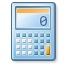
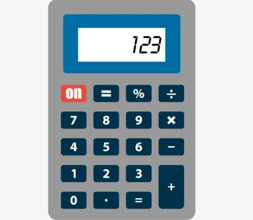
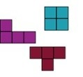
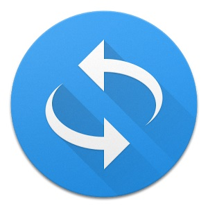

无误差计算器（C#版）
这个计算器是使用C#语言编写的Windows窗体应用程序。它具有的特性：(1)支持先做“*”和“/”运算，再做“+”和“-”运算；(2)支持圆括号“()”；(3)支持结果复用；(4)支持无限循环小数转化为分数；(5)支持复数的运算。

复数计算器（C++版）
这个计算器是使用C++语言编写的Windows控制台应用程序。它具有的特性：(1)支持先做“*”和“/”运算，再做“+”和“-”运算；(2)支持圆括号“()”；(3)支持复数的运算。
企业人事管理系统
人事管理系统的客户端是C#编写的窗体应用程序，服务器是C#编写的控制台应用程序，服务器使用SQL Server数据库存储数据，客户端使用TCP/IP通讯协议和服务器进行通讯。

俄罗斯方块游戏
俄罗斯方块游戏是经典俄罗斯方块游戏的重复实现，这个游戏的客户端是C#编写的基于Unity游戏引擎的程序，服务器是C#编写的控制台应用程序，服务器使用SQLite数据库存储数据，客户端使用TCP/IP通讯协议和服务器进行通讯。

数字和中文的转换程序
这个程序是使用C++编写的控制台程序，支持阿拉伯数字和中文数字的互相转换。